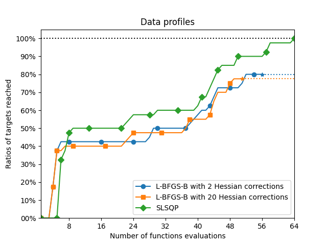

User guide¶
The gemseo_benchmark package provides functionalities to benchmark optimization algorithms, that is, to measure and compare their performances.
A typical use of this package consists of the following steps:
- define the algorithms configurations to be compared,
- define the problem configurations that will serve as landmarks for the analysis,
- execute a benchmarking scenario to produce
- the results of the algorithms configurations on the problem configurations,
- a benchmarking report in HTML or PDF format illustrated with data profiles.
Note
Other algorithms will be supported in the future (ex: root-finding algorithms).
The following sections present the sub-packages of gemseo_benchmark.
Algorithms configurations¶
The gemseo_benchmark.algorithms sub-package is responsible for the definition of the algorithms configurations to be investigated in a benchmarking study.
An AlgorithmConfiguration contains:
- the name of an algorithm,
- optionally, a name for the configuration (it will be generated automatically if unspecified),
- the values passed as its options (default values are used for the unspecified options).
For example, we may consider the L-BFGS-B algorithm with its maxcor
option (the maximum number of corrections of the Hessian approximation)
set to 2.
lbfgsb_2_corrections = AlgorithmConfiguration(
"L-BFGS-B",
"L-BFGS-B with 2 Hessian corrections",
maxcor=2,
)
Additionally, we may consider the same algorithm with a different option value, say 20.
lbfgsb_20_corrections = AlgorithmConfiguration(
"L-BFGS-B",
"L-BFGS-B with 20 Hessian corrections",
maxcor=20,
)
Of course it is also possible to consider an algorithm with all its options set to their default values.
slsqp_default = AlgorithmConfiguration("SLSQP")
The class AlgorithmsConfigurations is useful to gather algorithms configurations in groups so that they be treated together in a benchmarking report.
lbfgsb_configurations = AlgorithmsConfigurations(
lbfgsb_2_corrections,
lbfgsb_20_corrections,
name="L-BFGS-B configurations",
)
Problem configurations¶
The gemseo_benchmark.problems sub-package handles the problem configurations, on which the performances of the algorithms configurations is to be measured.
A [OptimizationBenchmarkingProblem][gemseo_benchmark.problems.optimization_benchmarking_problem.OptimizationBenchmarkingProblem] contains the mathematical definition of the problem, as an OptimizationProblem, and requires three other features.
- The starting points, from which the algorithms configurations should
be launched on the problem. Indeed, an algorithm may be quite
dependent on the starting point. Therefore, in the context of a
benchmarking study, it is advised to consider several starting
points.
- One can pass the starting points directly,
- or configure their generation as a design of experiments (DOE).
- The best objective value known for the problem.
- The target values, necessary to compute data profiles: typically, a scale of objective functions values ranging from a relatively easily achievable value to the best value known. Similarly to starting points, the target values can be either passed directly, or their generation can be configured.
For example, we define below problem configurations based on Rastrigin and Rosenbrock respectively, where
-
5 starting points are computed by Latin hypercube sampling (LHS),
doe_settings = {"doe_size": 5, "doe_algo_name": "lhs"} -
and the target values are passed directly as an exponential scale towards the minimum (zero).
target_values = TargetValues([10**-4, 10**-5, 10**-6, 0.0])
(The class TargetValues will be presented further down.)
rastrigin = OptimizationBenchmarkingProblem(
"Rastrigin",
Rastrigin,
target_values=target_values,
**doe_settings,
optimum=0.0,
)
rosenbrock = OptimizationBenchmarkingProblem(
"Rosenbrock",
Rosenbrock,
target_values=target_values,
**doe_settings,
optimum=0.0,
)
Note that the second argument of [OptimizationBenchmarkingProblem][gemseo_benchmark.problems.optimization_benchmarking_problem.OptimizationBenchmarkingProblem] must be callable. For example, a five-variables problem configuration based on Rosenbrock may be defined as follows.
rosenbrock_5d = OptimizationBenchmarkingProblem(
"Rosenbrock 5D",
lambda: Rosenbrock(5),
target_values=target_values,
**doe_settings,
optimum=0.0,
)
The class ProblemsGroup is useful to gather reference problems in groups so that they be treated together in a benchmarking report.
problems_2D = ProblemsGroup(
"2-variabbles functions",
[rastrigin, rosenbrock],
description="Unconstrained functions depending on 2 variables.",
)
Results¶
The gemseo_benchmark.results sub-package manages the results produced by the algorithms configurations on the problem configurations.
The history of the data produced by an algorithm configuration on a problem configuration is stored in a PerformanceHistory. More precisely:
- A value of interest in the benchmarking of algorithms is defined and named performance value. The most telling performance value is the value of the objective function for an optimization problem, or the value of a residual for a nonlinear equation.
- Each performance value is stored in a HistoryItem, along with an infeasibility measure (especially for problems subject to constraints).
- A PerformanceHistory is a sequence of HistoryItems. The index of the sequence is understood as the 0-based number of functions evaluations.
A PerformanceHistory may be saved to a file in JavaScript Object Notation (JSON).
The class Results gathers the paths to each PerformanceHistory in a benchmarking study. In practice, Results are generated by a benchmarking scenario, thanks to Benchmarker.execute.
Benchmarker¶
The gemseo_benchmark.benchmarker sub-package is responsible for the generation of the results.
The class Benchmarker is responsible for two tasks:
- executing (possibly in parallel) the algorithms configurations on the reference problems,
- saving the performance histories to files, and storing their paths in Results.
Datas profiles¶
The gemseo_benchmark.data_profiles sub-package handles the computation of data profiles.
A data profile is a graph that represents the extent to which an algorithm solves a problem (or a group of problems) for a given number of functions evaluations. To clarify this definition we need to introduce target values.
Target values¶
The difficulty of a problem configuration is represented by a scale of performance values, called target values, ranging from a relatively easily achievable value to the best value known. The most telling example of target value is the optimal value of the objective function. Target values can be thought as milestones on the trajectory towards the best value known.
target_values = TargetValues([10**-4, 10**-5, 10**-6, 0.0])
Since a sequence of target values is in fact a sequence of HistoryItems, the class TargetValues is a subclass of PerformanceHistory.
Targets generator¶
The target values of a problem can be handpicked but they can also be automatically computed with a generator of target values.
A TargetsGenerator relies on algorithms chosen as references.
- The problem is solved with the reference algorithms from each starting point.
- Instances of PerformanceHistory representing the history of the best performance value (which is decreasing) are computed, e.g. \(\{\min_{0\leq i \leq k} f(x_i)\}_{0 \leq k \leq K}\) where \(f\) is the objective function and \(x_k\) are the values of the design variables at iteration \(k\).
- A notion of median history is computed from these histories.
- Performance values are picked at uniform intervals in the median history: these are the target values.
Data profile¶
The data profile of an algorithm relative to a problem configuration (or a group of problem configurations) is the graph representing the ratio of target values reached by the algorithm relative to the number functions evaluations performed by the algorithm.

Report¶
The gemseo_benchmark.report sub-package manages the automatic generation of a benchmarking report in PDF or HTML format describing:
- the algorithms configurations,
- the problem configurations,
- the results generated by the algorithms on the problems, especially in the form of data profiles.
Scenario¶
The class Scenario is the highest-level class of the package: it lets the user execute the algorithms configurations on the problems and generate a benchmarking report by calling a single method.
scenario_dir = Path("scenario")
scenario_dir.mkdir()
scenario = Scenario([lbfgsb_configurations], scenario_dir)
results = scenario.execute([problems_2D])